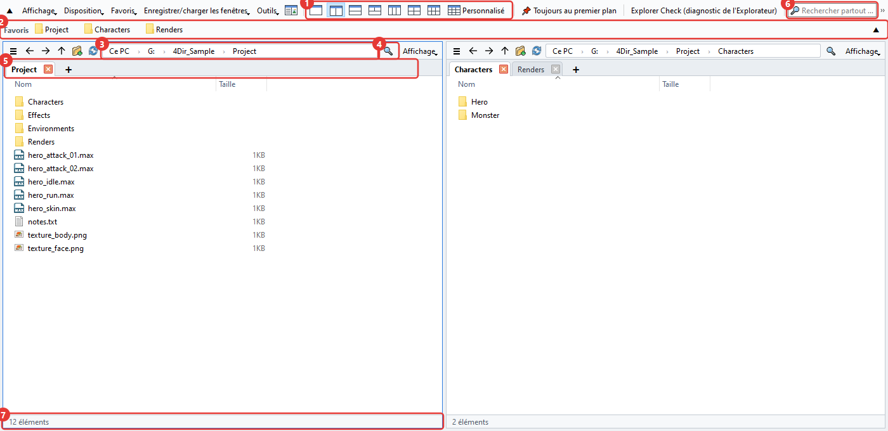
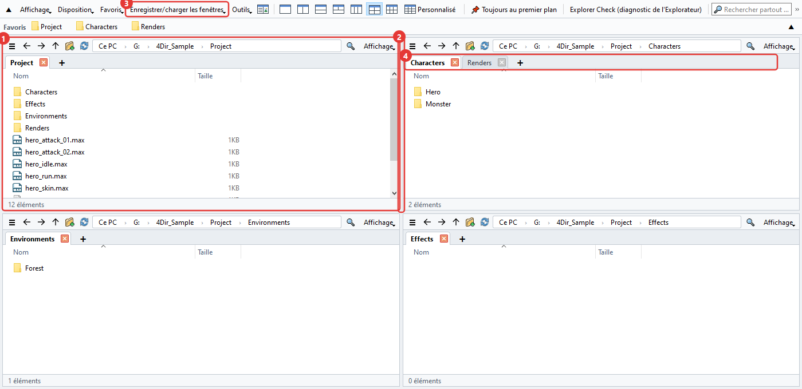
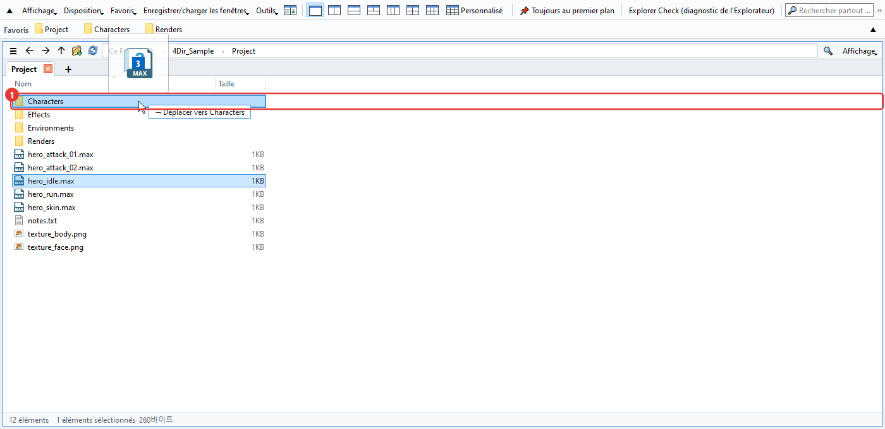
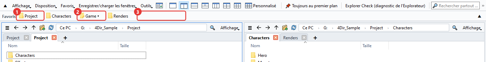
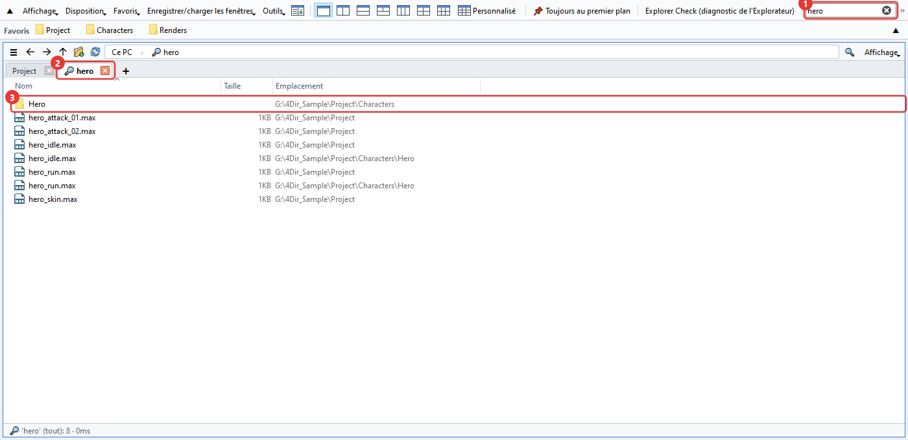
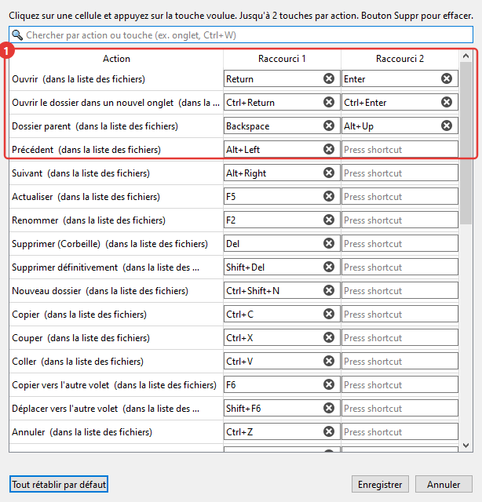
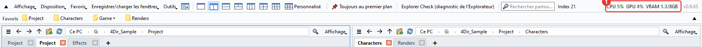
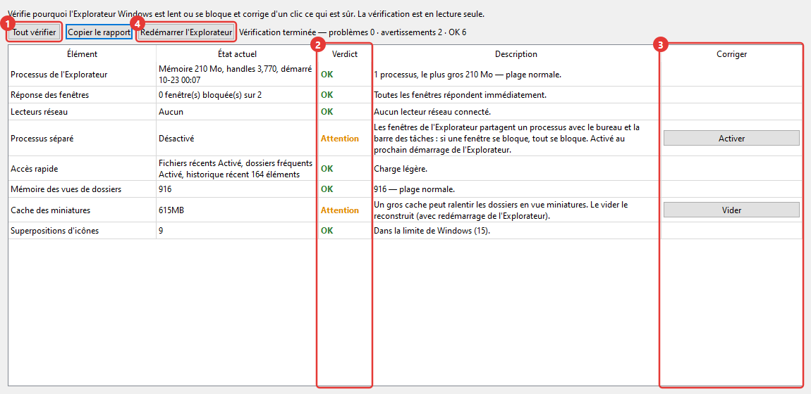

Mode d'emploi de 4Dir
Voici ce qui sert le plus, à peu près dans l'ordre où vous en aurez besoin. Les numéros rouges des images correspondent à ceux du texte. Les raccourcis sont presque les mêmes que dans l'Explorateur Windows : si vous l'utilisiez déjà, vous connaissez déjà la moitié.
La fenêtre principale
4Dir permet d'avoir plusieurs dossiers ouverts côte à côte dans une seule fenêtre. De haut en bas :

- Boutons de disposition. 1, 2, 3, 4 ou 6 volets en un clic. Le dernier, Personnalisé, permet de choisir le nombre de colonnes et de lignes (jusqu'à 5×4).
- Barre des favoris. Faites-y glisser un dossier que vous utilisez souvent, il devient un bouton. Un clic droit sur le bouton permet de le renommer ou de le retirer.
- Barre d'adresse. Cliquez sur un morceau du chemin pour aller directement dans ce dossier. Cliquez dans l'espace vide à droite pour taper le chemin.
- Filtre. Filtre le dossier actuel par nom. Ctrl+F
- Onglets. Chaque volet a ses propres onglets. On les ouvre avec + ou Ctrl+T et on les ferme avec Ctrl+W.
- Rechercher partout. Cherche des fichiers par nom sur des lecteurs entiers. Voir « Rechercher » plus bas.
- Barre d'état. Indique le nombre d'éléments, ainsi que le nombre et la taille de ceux qui sont sélectionnés.
Volets et onglets
Chaque volet est en fait un petit Explorateur. Chacun garde en mémoire ses onglets et ses dossiers.

- Le dernier volet sur lequel vous avez cliqué a un cadre bleu. Les raccourcis s'appliquent à ce volet.
- Faites glisser la séparation entre deux volets pour changer leur taille.
- Dans Enregistrer/charger les fenêtres, vous pouvez enregistrer sous un nom la disposition et les onglets actuels. En faire un par projet est bien pratique.
- Les onglets se déplacent par glisser pour changer l'ordre ou passer dans un autre volet. Lâché en dehors de la fenêtre, un onglet devient une nouvelle fenêtre. Un clic droit permet aussi de l'ouvrir dans l'Explorateur Windows.
Quand vous fermez puis rouvrez 4Dir, vous retrouvez vos derniers volets et onglets. Si vous redémarrez le PC avec 4Dir ouvert, il se rouvre à la connexion suivante (désactivable dans le menu Outils).
Déplacer et copier des fichiers
Comme dans l'Explorateur. Pendant le glisser, le dossier de destination est mis en évidence et un petit texte du genre « → Déplacer vers … » vous dit ce qui va se passer.

- Dossier de destination. Sur le même lecteur, c'est un déplacement ; sur un autre lecteur, une copie. Avec Ctrl enfoncé au moment de lâcher, on copie ; avec Shift, on déplace.
Avec plusieurs volets, pas besoin de glisser. Sélectionnez puis appuyez sur F6 pour copier vers l'autre volet, ou Shift+F6 pour déplacer.
Une erreur ? Ctrl+Z annule un par un les renommages, nouveaux dossiers, déplacements, copies et suppressions vers la corbeille.
Pendant un renommage avec F2, appuyez sur ↓ pour passer directement au fichier suivant. Sélectionnez plusieurs fichiers et appuyez sur F2 pour ouvrir la fenêtre Renommer par lot.
Le menu du clic droit est celui de Windows. Les menus de votre logiciel de compression ou de TortoiseSVN apparaissent donc comme dans l'Explorateur.
Favoris
Les dossiers que vous utilisez souvent se rangent sous forme de boutons dans la barre du haut. Elle est vide au départ et ne montre que ce que vous y ajoutez vous-même (rien à voir avec l'Accès rapide de l'Explorateur Windows).

- Bouton favori. Un clic ouvre le dossier dans le volet actuel. Le clic droit propose Ouvrir dans un nouvel onglet, Renommer et Supprimer. Si vous déposez des fichiers sur un bouton, ils sont déplacés ou copiés dans ce dossier.
- Bouton de groupe (▾). Plusieurs favoris réunis sous un seul bouton. Un clic déroule la liste. Déposez un dossier au milieu d'un bouton de groupe pour l'ajouter à ce groupe.
- Déposez un dossier sur un espace vide ou entre deux boutons, et un nouveau bouton apparaît à cet endroit. Les boutons se réordonnent par glisser. Le dossier actuel s'ajoute directement avec Ctrl+D.
S'il y a beaucoup de rangement à faire, ouvrez Favoris → Organiser les favoris. Supprimer plusieurs favoris d'un coup, changer l'ordre et les noms, créer des groupes, trouver les dossiers qui n'existent plus : tout est dans une seule fenêtre. Rien n'est appliqué avant d'appuyer sur Confirmer.
Si les boutons ne tiennent pas sur une ligne, cliquez sur ▼ tout à droite de la barre. Elle s'étend sur plusieurs lignes et affiche tout (▲ la remet sur une ligne).
Pour reprendre les dossiers épinglés dans l'Explorateur Windows : Favoris → Importer l'Accès rapide de l'Explorateur Windows. Ceux qui sont déjà là sont ignorés.
Rechercher
Tapez dans le champ de recherche en haut et la recherche démarre aussitôt. Au premier lancement, 4Dir crée une liste des noms de fichiers des lecteurs, puis il ne suit plus que les changements. C'est pour ça que c'est rapide.

- Champ de recherche. Avec plusieurs mots, seuls les noms qui les contiennent tous s'affichent. Les jokers comme
*.maxmarchent aussi. Ctrl+Shift+F - Les résultats s'ouvrent dans un onglet avec une loupe.
- La colonne « Emplacement » est le dossier où se trouve le fichier. Double-clic pour l'ouvrir, ou clic droit → Ouvrir l'emplacement du fichier pour aller dans ce dossier.
Les lecteurs à parcourir se choisissent dans Outils → Étendue de la recherche. Les lecteurs réseau sont désactivés au départ.
Si la liste n'est pas encore prête ou si le dossier est en dehors de l'étendue, le bouton fléché à côté du filtre parcourt directement tout ce qui se trouve sous le dossier actuel.
Si vous utilisez SVN
Si votre dossier de travail est sous SVN, les fichiers et dossiers portent une marque d'état. Si TortoiseSVN est installé, ce sont les mêmes icônes que dans l'Explorateur.

- Coche verte : pas de modification. Pour un dossier, tout son contenu est pris en compte.
- Point d'exclamation rouge : modifié. Sur un dossier, cela veut dire qu'il y a quelque part dedans des modifications non commitées.
- Plus bleu : à ajouter (pas encore commité).
- Point d'interrogation gris : fichier hors gestion de versions.
Les boutons de la barre des favoris ont les mêmes marques : vous voyez tout de suite en haut quels dossiers ne sont pas commités.
Les grosses copies de travail demandent quelques secondes la première fois. Pendant ce temps, la barre d'état affiche « Vérification SVN ». Si vous n'avez pas besoin des marques, désactivez Affichage → Afficher → Afficher l'état SVN.
Changer les raccourcis
Dans Outils → Raccourcis clavier, vous choisissez la touche de chaque fonction. Une fonction peut avoir jusqu'à deux touches.

- Cliquez dans la case et appuyez sur la touche voulue : c'est changé tout de suite. Si la touche est déjà prise, vous êtes prévenu.
Les plus utiles : Ctrl+T nouvel onglet, Ctrl+W fermer l'onglet, Ctrl+N nouvelle fenêtre, Ctrl+L barre d'adresse, Ctrl+Shift+C copier le chemin, Alt+Enter propriétés.
Utilisation CPU et GPU
C'est là pour voir à quel point le PC est occupé pendant un rendu dans 3ds Max ou une partie de jeu. Les chiffres s'affichent à droite de la barre du haut.

- CPU : utilisation de tout le PC. GPU : utilisation de la carte graphique. VRAM : mémoire de la carte graphique utilisée/totale (Go). Au-dessus de 60 %, l'affichage passe à l'orange, au-dessus de 85 % au rouge. Il se met à jour toutes les 1,5 seconde, et en passant la souris dessus vous voyez le nom de la carte graphique.
GPU et VRAM ne s'affichent qu'avec une carte NVIDIA. Avec une autre carte, seul le CPU apparaît.
La mémoire système (RAM) n'est pas affichée. Pour ça, voyez le Gestionnaire des tâches (Ctrl+Shift+Esc).
Pour le désactiver : Affichage → Afficher l'utilisation CPU·GPU. Quand la fenêtre est réduite, la mise à jour s'arrête d'elle-même. Si la fenêtre est étroite, l'affichage passe dans » au bout de la barre de menus.
Diagnostic de l'Explorateur (Explorer Check)
Un outil pour quand l'Explorateur Windows se fige ou rame souvent. Il s'ouvre avec Explorer Check (diagnostic de l'Explorateur) dans la barre du haut ou depuis le menu Outils. La vérification démarre dès l'ouverture. Elle ne fait que lire, elle ne modifie rien.

- Tout vérifier : relance la vérification. Elle regarde entre autres la mémoire de l'Explorateur, la réactivité des fenêtres, les lecteurs réseau, le processus séparé pour les fenêtres de dossiers, les éléments récents, la mémorisation des vues de dossiers, le cache des miniatures, le nombre d'icônes de superposition et les fermetures forcées récentes.
- Verdict : OK / Attention / Problème / Info. La colonne d'à côté explique pourquoi.
- Bouton de correction. Il n'apparaît que pour ce qui peut être corrigé. Avant d'agir, il redemande et dit ce qu'il va changer, et il ne touche qu'aux réglages et aux dossiers de l'utilisateur actuel.
- Redémarrer l'Explorateur : ferme l'Explorateur et le relance quand il est bloqué. Les fenêtres de l'Explorateur ouvertes seront fermées.
Copier le rapport copie le résultat en texte. Si vous nous posez une question sur un problème, joignez-le : on trouvera la cause plus vite.
Autres points
- Clair/sombre et la langue se trouvent dans le menu Affichage. La langue change après le redémarrage de 4Dir.
- Si 4Dir se comporte bizarrement, cliquez sur Outils → Enregistrer le journal pour signaler un problème et envoyez le zip créé à support@4dir.net. Le journal nous sert à trouver la cause.